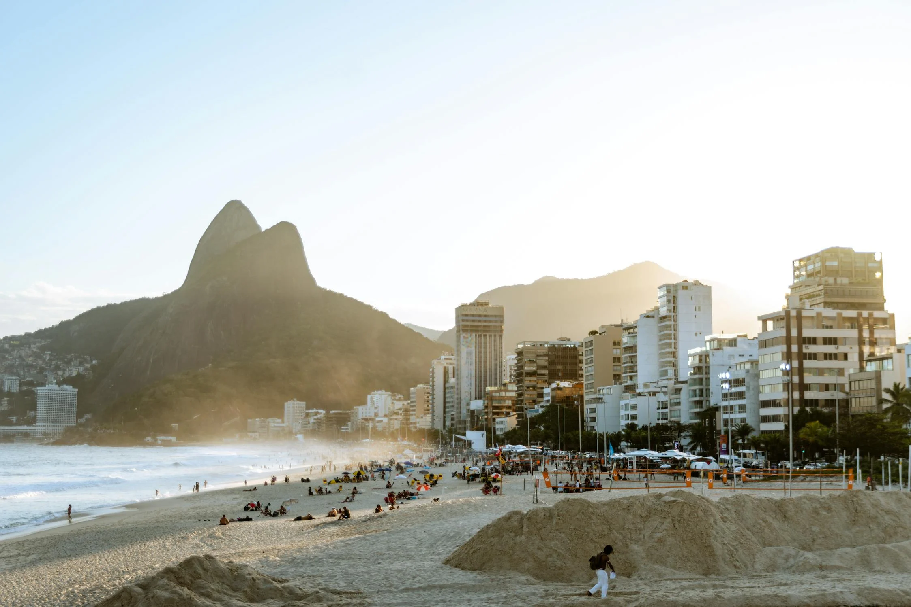
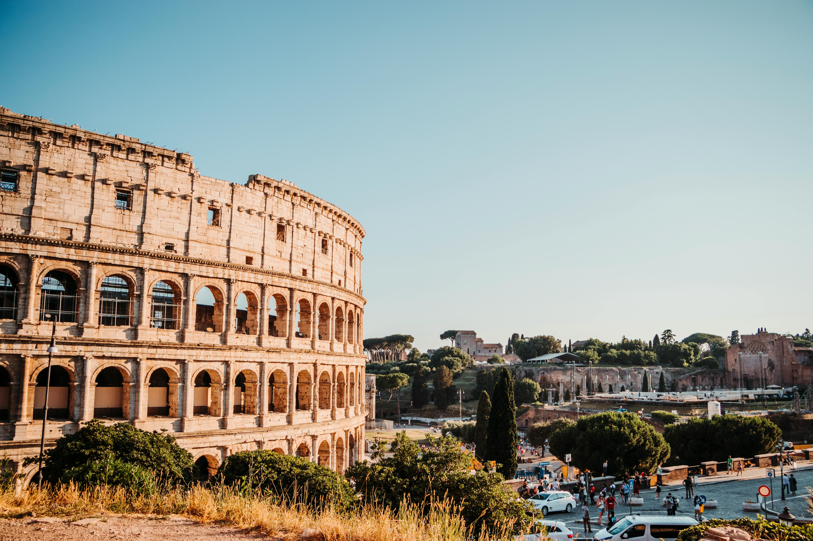

DESTINOS POPULARES
Explora nuestros destinos más populares y empieza a planificar tu próxima aventura.
Destinos Destacados
-
París
Paris, la Ciudad de la Luz, cautiva con su elegancia atemporal y su encanto romántico. Conocida por sus icónicos monumentos como la Torre Eiffel y el Louvre, esta metrópolis histórica es un crisol de cultura, moda y gastronomía. Pasea por sus amplias avenidas bordeadas de majestuosos edificios, saborea exquisitos manjares en acogedores cafés y embárcate en un viaje a través de la historia del arte en sus museos de renombre mundial. Paris es mucho más que una ciudad; es una experiencia inolvidable que deja una huella imborrable en el corazón de quienes la visitan.
-

Tokyo
Sumérgete en la vibrante metrópolis de Tokyo, donde la tradición y la modernidad se entrelazan en un fascinante paisaje urbano. Desde sus bulliciosos mercados de pescado y templos antiguos hasta sus relucientes rascacielos y distritos de moda, Tokyo ofrece una experiencia única llena de contrastes. Explora la rica cultura japonesa, disfruta de la deliciosa gastronomía local, y sumérgete en la energía inigualable de una de las ciudades más emocionantes del mundo.
-

Río de Janeiro
Río de Janeiro, conocida como la Ciudad Maravillosa, cautiva con su exuberante belleza natural y su vibrante cultura. Desde las icónicas playas de Copacabana e Ipanema hasta la majestuosa silueta del Cristo Redentor, cada aspecto de esta ciudad es una obra maestra. Sumérgete en la energía contagiosa de sus desfiles de carnaval, saborea la deliciosa cocina brasileña en sus animados restaurantes y maravíllate con la panorámica vista desde el famoso Pan de Azúcar. En Río de Janeiro, la alegría y la pasión se entrelazan en un paisaje pintoresco que te dejará sin aliento y te hará querer volver una y otra vez.
-

Nueva York
Nueva York, la ciudad que nunca duerme, es un fascinante crisol de cultura, arte y diversidad. Desde los imponentes rascacielos de Manhattan hasta los eclécticos vecindarios de Brooklyn, cada rincón de esta metrópolis rezuma energía y vitalidad. Déjate deslumbrar por la emblemática Estatua de la Libertad, maravíllate con las luces de Times Square y sumérgete en la efervescencia cultural de sus museos, teatros y galerías de arte. En Nueva York, cada calle cuenta una historia, cada esquina ofrece una nueva aventura, convirtiéndola en un destino que nunca deja de inspirar y emocionar.
-

Londres
Londres, una ciudad que mezcla la tradición con la modernidad, es un destino emblemático donde la historia se encuentra con la innovación. Desde el imponente Palacio de Buckingham hasta el bullicioso mercado de Camden, cada rincón de esta metrópolis ofrece una experiencia única. Sumérgete en su rica historia explorando monumentos como la Torre de Londres, disfruta de la animada escena teatral del West End y deléitate con la diversidad culinaria en sus vibrantes barrios. En Londres, la energía contagiosa de la ciudad nunca deja de sorprender y fascinar a quienes la visitan.
-

Roma
Sumérgete en la majestuosidad eterna de Roma, una ciudad que respira historia en cada rincón. Camina por las antiguas calles empedradas y maravíllate con los monumentos que narran siglos de grandeza, desde el imponente Coliseo hasta la grandiosidad del Vaticano. Déjate seducir por la deliciosa cocina italiana mientras exploras plazas encantadoras y callejuelas pintorescas. En Roma, cada momento es un encuentro con el legado perdurable de una de las civilizaciones más influyentes del mundo.
-

Sídney
Descubre la belleza costera y la vitalidad urbana de Sídney, una ciudad icónica que combina un impresionante horizonte con playas de arena dorada y una escena cultural vibrante. Desde el majestuoso Sydney Opera House hasta el emblemático puente de Harbour Bridge, cada rincón de esta ciudad te invita a explorar su encanto único. Disfruta de relajantes días en la playa, aventuras al aire libre y experiencias gastronómicas inolvidables.